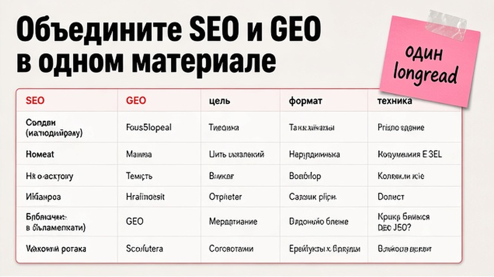
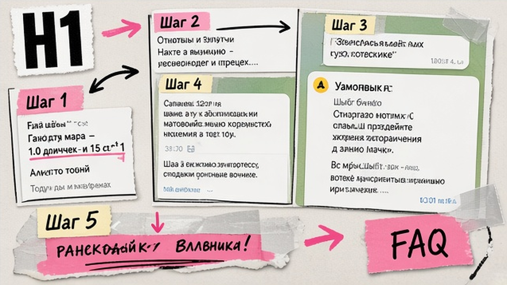

Вы пишете seo текст для блога, а на выходе получается полотно под ключи: люди закрывают вкладку, поиск видит слабое удержание, нейропоиск не находит готовых фрагментов для цитаты. В 2026 году нужен один материал сразу под SEO и GEO: смысл для человека плюс атомарные блоки для AI. Ниже пошаговый workflow от интента до чеклиста. Пройдя его, вы соберёте семантику, каркас longread, FAQ и подготовите handoff под schema без переспама и воды.
TL;DR / Быстрый инсайт: SEO-статья закрывает конкретный запрос и читается как инструкция, а не список ключей. GEO (Generative Engine Optimization) дополняет SEO: упаковывает тот же текст для цитирования в Яндекс Нейро и Google AI Overviews. Порядок работ: интент → Wordstat и SERP → H2-чанки → lead 350–500 знаков → мета → FAQ в HTML → JSON-LD отдельно → 15+ пунктов чеклиста. Универсального объёма нет; для how-to ориентир 8 500–9 500 знаков текста.
SEO-статья – это материал, который даёт полный ответ на запрос: введение, шаги или чеклист, следующий шаг для читателя. Поисковики смотрят на смысл и пользу, а не на плотность ключей; переспам в 2026 году вредит и людям, и алгоритмам. GEO не заменяет индексацию: без нормальной структуры и видимого HTML нейросеть просто не увидит ваш текст.
Мы в редакции Ковчега ведём блог в режиме B: только how-to и чеклисты. Эта страница – эталон того же формата, который описывает. Один longread вместо двух проектов "сначала SEO, потом отдельно AI".

Классическое SEO отвечает на вопрос: найдёт ли человек страницу и кликнет ли по Title в сниппете. GEO – про цитирование в генеративных ответах, когда пользователь спрашивает нейросеть, а не вводит запрос в строку. Нейросистемы вырезают пассажи: каждый H2 должен быть "островом смысла" – понятен без соседних абзацев. Первое предложение под заголовком – готовый тезис для AI.
Делайте: пишите для человека, затем проверяйте, что каждый H2 можно процитировать отдельно. Не делайте: отдельный "SEO-черновик" и "GEO-надстройку" – расходятся формулировки, ломается trust.
| Критерий | SEO | GEO |
|---|---|---|
| Цель | Клик из выдачи и удержание на странице | Цитата в AI-ответах (Нейро, AI Overviews) |
| Формат | Title и Description в сниппете | Короткий фрагмент из H2 или FAQ |
| Техника | Мета, alt, внутренние ссылки, Wordstat | FAQ в HTML, JSON-LD, llms.txt |
Файл llms.txt (стандарт с сентября 2024, Jeremy Howard / Answer.AI) подсказывает AI-краулерам, что индексировать на сайте. Это полезный сигнал рядом с sitemap, не замена robots.txt. 7 мая 2026 Google прекратил показ FAQ rich results (аккордеон в выдаче), но тип FAQPage на schema.org остаётся валидным – Google и другие системы могут использовать пары вопрос–ответ для понимания страницы.
Схема единого workflow:
Интент → семантика (Wordstat, SERP) → outline H2/H3 → lead → черновик с чанками → Title/Description/alt → FAQ в HTML → handoff schema (BlogPosting + FAQPage) → чеклист → публикация
Универсального объёма SEO-статьи не существует – он зависит от сложности темы и конкуренции в выдаче. Для запроса "как писать seo статьи" в топе обычно полные гайды: семантика, структура, чеклист. Семантику собирают в Яндекс Вордстат и Яндекс Вебмастер: primary query, secondary ("seo текст для блога", "geo оптимизация статьи"), LSI по теме.
Title и Description влияют на сниппет и кликабельность. Title – ориентир около 60–65 знаков с ключом и триггером (чеклист, инструкция). H1 на странице не дублирует Title слово в слово: Title – обещание в выдаче, H1 – заголовок материала. H1 один на страницу; H2–H3 делят текст на смысловые блоки, не на "ещё один ключ".
Делайте: нормальный порядок "спрос → текст для человека → SEO-доводка", как советуют практики 2026 года. Не делайте: шаблон "10 000 знаков и 15 ключей" – поисковики наказывают пустой объём.
К изображениям добавляют alt с описанием смысла картинки; имена файлов – латиницей. Внутренние ссылки 2–3 на релевантные материалы и главную блога помогают и SEO, и навигации читателя.

Блок "Частые вопросы" в HTML – не декор. Вопросы совпадают с реальными запросами: сколько символов, что такое geo в seo, нужна ли schema. Ответы 2–4 предложения – готовые чанки для AI. Текст FAQ в HTML и в JSON-LD должен совпадать дословно; расхождение ломает доверие к разметке.
Schema (структурированные данные) – это JSON-LD с типами BlogPosting и FAQPage. Разметку выносят в отдельный файл или meta темы, не вставляют сырой JSON в body статьи. LLM часто не выполняют JavaScript – дублирование FAQ в видимом HTML и в JSON-LD критично для geo оптимизации статьи.
Делайте: пять–семь пар вопрос–ответ с формулировками из Wordstat и SERP. Не делайте: обещать FAQ-сниппет Google после 7 мая 2026 – аккордеон в выдаче отключён, но понимание страницы через FAQPage остаётся актуальным.
Если планируете серию материалов, заведите один пайплайн: research-notes → article.html → article.meta.json → QA → schema → publish. Так geo оптимизация не превращается в ручной хаос перед каждым постом. Для автоматизации контент-конвейера пригодятся навыки Make.com – в курсе по Make и вайбкодингу разбирают связку сайта, CRM и генерации черновиков без программирования.
Перед выкладкой пройдите список – сохраните как шаблон в таблице или Notion.
Делайте: финальную проверку ссылок и дат "на 2026 год". Не делайте: публиковать без второй пары глаз на факты – один неверный процент бьёт по E-E-A-T сильнее слабой перелинковки.
Закрепите ритм: тема из семантики → research → longread → QA → schema → публикация. Вторая статья с перелинковкой на эту усиливает кластер "seo текст для блога". Обновите llms.txt, когда накопится пять–десять материалов. Раз в квартал – ревизия старых постов: даты, факты, битые ссылки. Профиль эксперта для E-E-A-T: Артур Хорошев.
Материал проверен: эксперт Елена Ковалева (главный эксперт по SEO/GEO).
Достоверность данных: рекомендации по структуре и мета сверены с официальной справкой Яндекс Директа и материалами из research-notes (в т.ч. гайд «SEO-текст», 27.01.2026) на 11.10.2026. Точные показы Wordstat в этой сессии не запрашивались – проверьте частотность вручную в Вордстате перед медиапланом.
Универсальной нормы нет – объём зависит от темы и конкурентов в выдаче. Ориентир для how-to longread: 8 500–9 500 знаков текста, если SERP требует глубины. Добавляйте факты и шаги, а не воду ради цифры.
GEO (Generative Engine Optimization) дополняет SEO: цель – цитирование в AI-ответах при базе индексируемого контента. Нужны атомарные H2, FAQ в HTML и согласованная schema – без отдельного "роботского" текста.
Нет. Поисковики оценивают смысл и полезность; переспам вреден. Primary query – в заголовках и lead, secondary и LSI – естественно в подзаголовках.
Title – для сниппета (около 60–65 знаков, ключ и триггер). H1 – заголовок на странице. Не дублируйте их слово в слово: разные роли, один интент.
Минимум BlogPosting и FAQPage при наличии блока вопросов. JSON-LD отдельно от body; текст FAQ совпадает с видимым HTML.
Полезный дополнительный сигнал для AI-краулеров (стандарт с сентября 2024). Не заменяет sitemap и нормальную индексацию.
Пройдите чеклист из раздела выше: семантика, мета, H2, FAQ, schema handoff, ссылки, читабельность, island test. Затем технический QA: linter HTML, проверка ссылок, slop и каннибализация ключей.